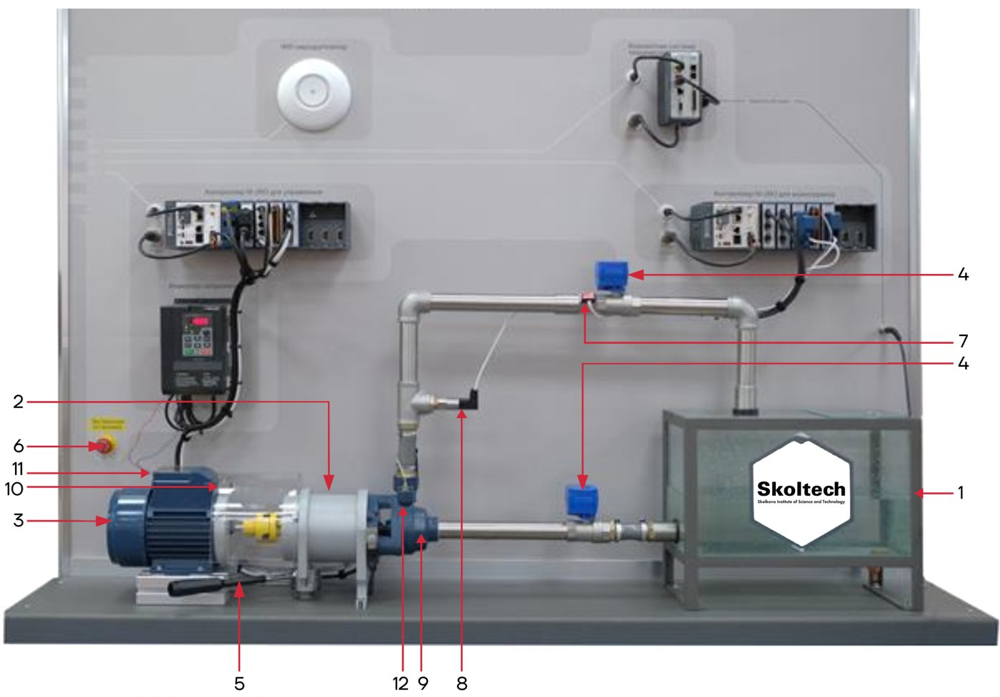
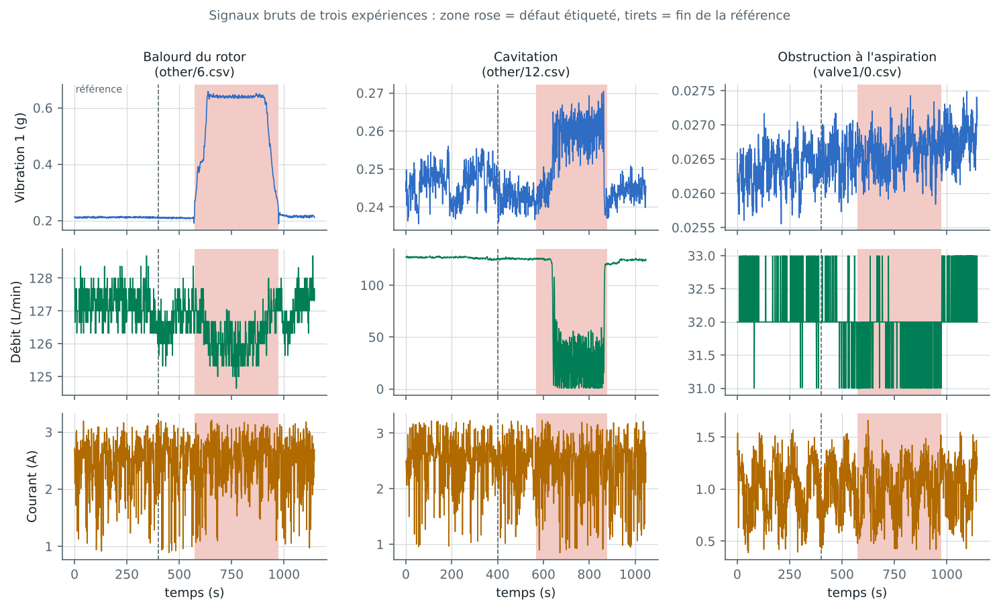
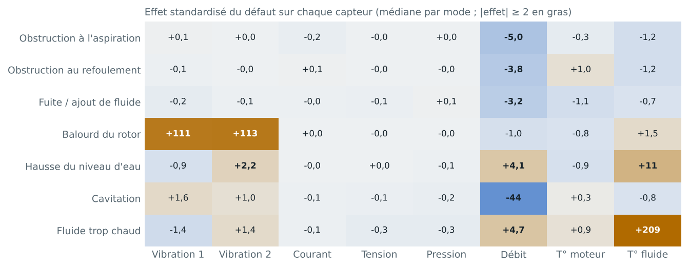
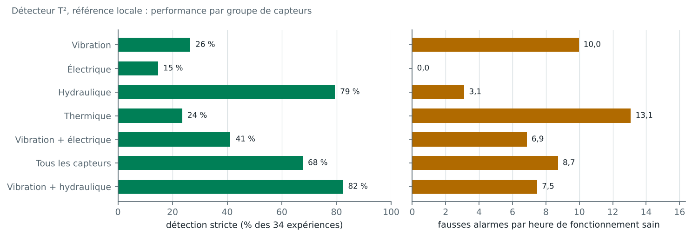
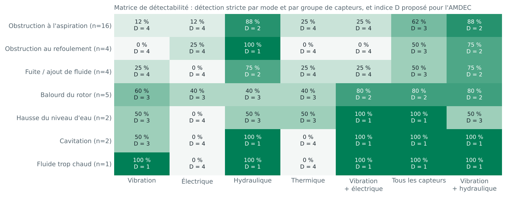
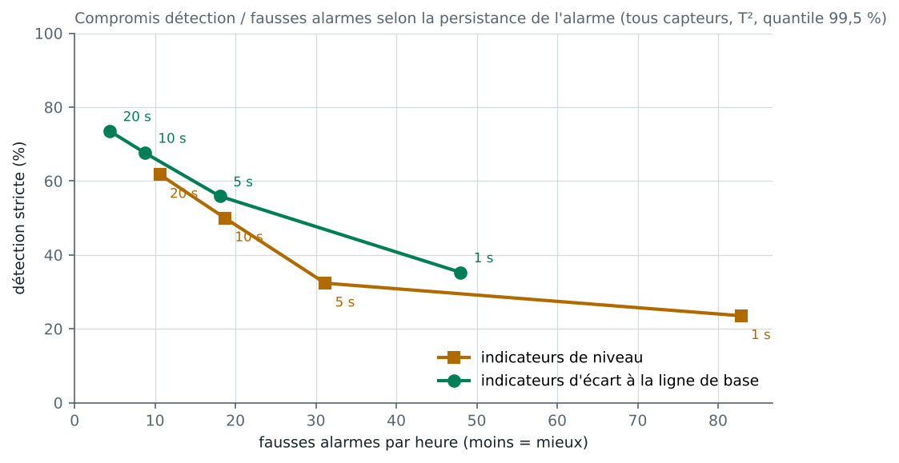
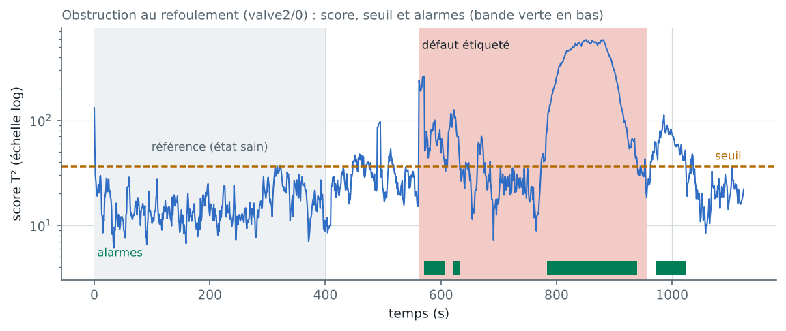

État : terminé · tous les résultats ci-dessous viennent de l'exécution du code du projet sur les données réelles (novembre 2026)
Résumé
On surveille une électropompe de banc d'essai avec huit capteurs : deux accéléromètres, le courant et la tension du moteur, la pression, le débit, et deux températures. On cherche quel groupe de capteurs détecte quel mode de défaillance, avec quel délai et avec combien de fausses alarmes, puis on traduit ces mesures en indice de détection D de l'AMDEC. Le banc a subi 34 expériences de défaut, réparties en 7 modes.
Résultats principaux
- Les capteurs hydrauliques (débit, pression) sont le meilleur groupe seul. La première alarme tombe pendant le défaut dans 79 % des expériences, avec 3,1 fausses alarmes par heure.
- Les mesures électriques (courant et tension efficaces, échantillonnés à 1 Hz) ne détectent presque rien : 15 % de détection stricte. Sur ce banc et avec ce type de mesure, le courant ne remplace pas les autres capteurs.
- La vibration est indispensable pour le balourd : effet environ 110 fois l'écart-type normal, alarme en 9 à 10 s. Elle est en revanche aveugle aux obstructions.
- La combinaison vibration + hydraulique (4 capteurs) donne le meilleur compromis : 82 % de détection stricte, 7,5 fausses alarmes par heure, et un indice D ≤ 2 pour 6 des 7 modes.
- Un modèle appris sur un autre jour, donc à un autre point de fonctionnement, ne fonctionne pas. La référence doit être réapprise à chaque changement de régime.
- Le score F1 point par point, utilisé par le benchmark SKAB, récompense des détecteurs qui déclenchent beaucoup de fausses alarmes. Pour la maintenance, il faut l'évaluer par événement.
1. Problématique
Sur une installation de pompage, une défaillance peut être mécanique (balourd), hydraulique (obstruction, fuite, cavitation) ou liée au process (niveau, température du fluide). Chaque capteur coûte : achat, pose, câblage, maintenance. La question industrielle est donc :
Quels capteurs installer, et avec quelle règle d'alarme, pour détecter tôt chaque mode de défaillance sans noyer l'équipe sous les fausses alarmes ?
2. Choix du jeu de données
La fiche initiale prévoyait le jeu de l'Université de Twente (signaux de courant et de vibration à haute fréquence, 20,8 Go). Il n'a pas pu être téléchargé dans l'environnement de calcul du projet, et son volume rendait la reproduction difficile pour l'équipe. Nous avons retenu le Skoltech Anomaly Benchmark (SKAB) [1] pour les raisons suivantes :
| Critère | SKAB |
|---|---|
| Système | Banc réel de circulation d'eau : réservoir, électropompe pilotée par variateur, vannes à commande électrique, capteurs |
| Capteurs | Les deux familles de la question initiale (vibration et courant moteur), plus la pression, le débit et les températures |
| Défauts | 34 expériences étiquetées, 7 modes de défaillance (tableau ci-dessous) |
| Accès | Public, sur GitHub ; licence GPL-3.0 ; 18 Mo |
| Antériorité | Benchmark connu, avec un classement d'algorithmes : nos résultats peuvent être comparés |
Conséquence sur la question. Les signaux de SKAB sont des valeurs efficaces échantillonnées à 1 Hz. L'analyse spectrale du courant (MCSA) est donc impossible. La question devient : quelle information apporte chaque famille de capteurs, telle qu'elle est mesurée sur une supervision industrielle courante ?
Différence avec le projet antérieur (données NASA, estimation de la RUL) : système différent (pompe), données réelles et non simulées, tâche différente (détection, et non durée de vie résiduelle). L'apport propre est la comparaison des groupes de capteurs, le lien chiffré avec l'AMDEC et l'évaluation orientée maintenance.

3. Données
| Mode de défaillance (fichiers SKAB) | Nombre d'expériences | Description |
|---|---|---|
| Obstruction à l'aspiration (valve1) | 16 | Fermeture de la vanne à l'entrée de la pompe |
| Obstruction au refoulement (valve2) | 4 | Fermeture de la vanne en sortie de pompe |
| Fuite / ajout de fluide (other 1-4) | 4 | Simulation de fuites et d'ajouts de fluide |
| Balourd du rotor (other 5-9) | 5 | Balourd appliqué selon 5 profils : brusque, linéaire, en échelon, impulsion, exponentiel |
| Hausse du niveau d'eau (other 10-11) | 2 | Augmentation lente ou brusque de l'eau dans le circuit |
| Cavitation (other 12-13) | 2 | Vidange jusqu'à cavitation ; écoulement diphasique à l'aspiration |
| Fluide trop chaud (other 14) | 1 | Alimentation en eau à température élevée |
Un fichier supplémentaire de 9 405 s (2 h 37) enregistre un fonctionnement sans anomalie, un autre jour.
Contrôle qualité
- Aucune valeur manquante. Chaque expérience contient un seul défaut étiqueté.
- Six fichiers présentent des trous d'enregistrement de plus de 5 s ; le plus long dure 247 s (other/2). Ils sont conservés et signalés comme limite.
- Dans other/2, le défaut commence à 104 s. Le protocole standard de SKAB, qui apprend sur les 400 premières secondes, y apprend donc sur des données défaillantes. Notre protocole arrête la référence 10 s avant le défaut (94 s ici).
- Le point de fonctionnement change d'un jour à l'autre (médianes sur les références) :
| Jour d'enregistrement | Débit (L/min) | Vibration 1 (g) | Courant (A) |
|---|---|---|---|
| 8 février 2020 (fichier sain, balourd, niveau, cavitation, fluide chaud) | ≈ 127 | ≈ 0,23 | ≈ 2,6 |
| 1ᵉʳ mars 2020 (fuites) | ≈ 77 | ≈ 0,08 | ≈ 1,6 |
| 9 mars 2020 (obstructions) | ≈ 32 | ≈ 0,03 | ≈ 1,0 |

4. Méthode
- Référence locale (état sain). Pour chaque expérience, la référence couvre les 400 premières secondes, en s'arrêtant au moins 10 s avant le défaut. On apprend le modèle sur 75 % de la référence et on fixe le seuil sur les 25 % restants (quantile 99,5 % du score).
- Indicateurs causaux, calculés seulement sur le passé, comme en surveillance en ligne. Pour chaque capteur :
- écart = moyenne des 10 dernières secondes − moyenne des 120 secondes précédentes ; il réagit aux changements brusques et ignore les dérives lentes ;
- écart-type des 10 dernières secondes ; il est sensible aux fluctuations.
- Détecteurs entraînés sur l'état sain uniquement :
- T² de Hotelling : distance de Mahalanobis avec covariance régularisée par Ledoit-Wolf. C'est la méthode de référence de la maîtrise statistique multivariée des procédés.
- Isolation Forest, pour comparaison.
- Règle d'alarme : le score doit dépasser le seuil pendant 10 s consécutives (persistance).
- Groupes de capteurs comparés : vibration, électrique, hydraulique, thermique, vibration + électrique, tous les capteurs. Le groupe vibration + hydraulique a été ajouté après lecture des premiers résultats : c'est une hypothèse a posteriori, signalée comme telle.
- Jeu de développement. Les réglages (type d'indicateur, persistance, quantile) ont été choisis uniquement sur les 16 expériences d'obstruction à l'aspiration. Les résultats sont aussi donnés sur les 18 autres expériences (« test »).
Métriques
| Métrique | Définition | Pourquoi |
|---|---|---|
| Détection stricte | La première alarme après la référence tombe pendant le défaut | C'est ce que vit l'opérateur : une alarme qui sonne avant le défaut est une fausse alarme, même si une autre suit pendant le défaut |
| Détection | Au moins une alarme pendant le défaut | Plus indulgente |
| Délai | Temps entre le début du défaut et la première alarme | Temps gagné pour réagir |
| Fausses alarmes par heure (FA/h) | Épisodes d'alarme pendant le fonctionnement sain, rapportés à sa durée | Coût de la surveillance pour l'équipe |
| F1, FAR, MAR point par point | Métriques du benchmark SKAB | Comparaison avec la littérature |
5. Résultats
Signatures des défauts

- Balourd : vibration multipliée (effet ≈ +110 écarts-types) ; le reste ne bouge presque pas.
- Cavitation : effondrement du débit (−44).
- Fluide trop chaud et hausse du niveau : température du fluide (+209 et +11) et débit.
- Obstructions et fuites : seulement le débit (−3 à −5).
- Courant et tension : aucun effet notable (|effet| ≤ 0,3), quel que soit le mode.
Ces signatures donnent une première règle de diagnostic : quel capteur a bougé, et dans quel sens.
Comparaison des groupes de capteurs

| Groupe (T², référence locale) | Détection stricte | Détection | Délai médian | FA/h | Détection stricte sur le jeu test (18 exp.) |
|---|---|---|---|---|---|
| Vibration | 26 % | 53 % | 15 s | 10,0 | 39 % |
| Électrique | 15 % | 15 % | 190 s | 0,0 | 17 % |
| Hydraulique | 79 % | 94 % | 34 s | 3,1 | 72 % |
| Thermique | 24 % | 62 % | 44 s | 13,1 | 22 % |
| Vibration + électrique | 41 % | 59 % | 21 s | 6,9 | 56 % |
| Tous les capteurs | 68 % | 97 % | 14 s | 8,7 | 72 % |
| Vibration + hydraulique (a posteriori) | 82 % | 97 % | 25 s | 7,5 | 78 % |
Avec les mêmes capteurs, Isolation Forest fait moins bien que le T² dans 6 groupes sur 7 (par exemple 50 % contre 68 % pour tous les capteurs). La seule exception est le groupe thermique, où les deux méthodes sont faibles (26 % contre 24 %).
Matrice de détectabilité et indice D

Convention du projet pour traduire la mesure en indice D de l'AMDEC (1 = très bien détecté, 4 = non détecté) :
| D | Condition |
|---|---|
| 1 | Détection stricte ≥ 90 % et délai médian ≤ 60 s |
| 2 | Détection stricte ≥ 70 % |
| 3 | Détection stricte ≥ 40 % |
| 4 | Détection stricte < 40 % |
Compromis entre détection et fausses alarmes

| Indicateurs, persistance | F1 point par point | Détection stricte | FA/h |
|---|---|---|---|
| Niveau, 1 s | 0,78 | 24 % | 82,9 |
| Niveau, 10 s | 0,78 | 50 % | 18,7 |
| Écart, 10 s (réglage retenu) | 0,51 | 68 % | 8,7 |
| Écart, 20 s | 0,46 | 74 % | 4,4 |
Le F1 point par point est trompeur pour la maintenance. Les indicateurs de niveau obtiennent le meilleur F1 (0,78), au niveau du meilleur algorithme du classement SKAB. Ils restent en alarme pendant tout le défaut, ce que le F1 récompense, mais ils déclenchent aussi jusqu'à 83 fausses alarmes par heure. Les indicateurs d'écart signalent le début du défaut, ce qui intéresse la maintenance. À persistance égale, ils déclenchent environ deux fois moins de fausses alarmes et détectent plus souvent le défaut en premier.
Contrôle de cohérence avec le benchmark. Avec le protocole SKAB (apprentissage sur les 400 premiers points, valeurs brutes, T², seuil au quantile 99 %), notre implémentation obtient F1 = 0,76, FAR = 0,48 et MAR = 0,13. Le classement publié par SKAB donne F1 = 0,66 pour le T² et 0,76 pour le T² + Q [1]. Notre code se situe dans le même ordre de grandeur ; les écarts viennent des détails d'implémentation (covariance régularisée, seuil).
Référence locale ou globale ?
Un modèle appris sur le fichier sain du 8 février, puis appliqué à toutes les expériences, ne donne plus que 32 % de détection stricte (tous capteurs), contre 68 % avec la référence locale. Le tableau du contrôle qualité l'explique : le débit passe de 127 à 32 L/min selon le jour, et la vibration de 0,23 à 0,03 g. Un modèle de l'état sain ne vaut que pour le point de fonctionnement où il a été appris.
Exemple

6. Analyse des erreurs (configuration vibration + hydraulique)
Six expériences sur 34 échouent au critère strict :
| Expérience | Mode | Cause |
|---|---|---|
| other/4, other/8, other/11, valve1/14, valve2/1 | Fuite, balourd, niveau, obstructions | Faux positif : alarme pendant le fonctionnement normal avant le défaut (1 à 3 épisodes). Le défaut est ensuite bien détecté. |
| valve1/2 | Obstruction à l'aspiration | Faux négatif : aucune alarme pendant le défaut. L'effet sur le débit est très faible, et ce fichier contient un trou d'enregistrement de 76 s. |
La plupart des échecs sont donc des fausses alarmes, pas des défauts manqués. C'est l'argument pour une persistance plus longue (20 s) quand l'équipe de maintenance préfère un léger retard à une alarme inutile.
7. Hypothèses : bilan
| Hypothèse | Verdict | Élément de preuve |
|---|---|---|
| H1. Le courant moteur suffit pour détecter les défauts | Rejetée sur ce banc | 15 % de détection stricte ; effets ≤ 0,3 écart-type. Avec des valeurs efficaces à 1 Hz, la signature du courant est noyée dans ses fluctuations normales (écart-type médian ≈ 0,28 A). |
| H2. La vibration est le bon capteur des défauts mécaniques | Confirmée pour le balourd | Effet ≈ +110 ; délai ≈ 9 s. En revanche, 0 à 12 % sur les obstructions. |
| H3. Les capteurs hydrauliques détectent les défauts de process | Confirmée | 88 à 100 % sur les obstructions, 75 % sur les fuites, 100 % sur la cavitation |
| H4. Fusionner tous les capteurs améliore toujours la détection | Rejetée | Tous les capteurs : 68 % ; hydraulique seul : 79 %. Les capteurs peu informatifs (thermiques, électriques) ajoutent surtout des fausses alarmes. Une fusion choisie (vibration + hydraulique : 82 %) fait mieux. |
| H5. Une référence apprise un autre jour reste valable | Rejetée | 32 % contre 68 % ; changement de point de fonctionnement |
8. Retour vers l'AMDEC
Les fréquences (F) et les gravités (G) ci-dessous sont des cotations pédagogiques à confirmer par un retour d'expérience. Seul l'indice D « avec surveillance » est mesuré par ce projet (configuration vibration + hydraulique).
| Mode | F | G | D sans surveillance | C avant | D mesuré | C après |
|---|---|---|---|---|---|---|
| Obstruction à l'aspiration | 3 | 3 | 4 | 36 | 2 | 18 |
| Obstruction au refoulement | 2 | 2 | 4 | 16 | 2 | 8 |
| Fuite | 3 | 2 | 4 | 24 | 2 | 12 |
| Balourd du rotor | 2 | 3 | 4 | 24 | 2 | 12 |
| Hausse du niveau d'eau | 2 | 1 | 4 | 8 | 3 | 6 |
| Cavitation | 2 | 4 | 4 | 32 | 1 | 8 |
| Fluide trop chaud | 1 | 3 | 4 | 12 | 1 | 3 |
C = F × G × D. Avec quatre capteurs, la criticité de chaque mode baisse de 25 à 75 %.
9. Recommandations de maintenance
- Installer d'abord un débitmètre sur les pompes critiques : c'est le capteur le plus informatif pour les défauts de process (obstructions, fuites, cavitation), avec peu de fausses alarmes.
- Ajouter la vibration sur les machines exposées aux défauts mécaniques. Le balourd y est détecté en une dizaine de secondes.
- Ne pas compter sur le courant efficace à 1 Hz pour la surveillance mécanique ou hydraulique. Pour une surveillance électrique, il faut une acquisition rapide (plusieurs kHz) et une analyse spectrale (MCSA), comme le prévoyait le jeu de Twente.
- Réapprendre la référence après chaque intervention et à chaque changement de point de fonctionnement (consigne du variateur, vannes), ou tenir une référence par régime.
- Régler la persistance avec l'équipe : 10 s pour détecter vite, 20 s pour réduire les fausses alarmes de moitié.
- Évaluer un système de surveillance par événement (détection stricte, délai, fausses alarmes par heure), et non par un F1 point par point.
10. Limites
- Défauts provoqués en laboratoire, sur un seul banc : la généralisation à une installation industrielle reste à démontrer.
- Effectifs faibles pour certains modes (1 ou 2 expériences) : les taux correspondants sont très incertains.
- Signaux efficaces à 1 Hz : pas d'analyse spectrale ; nos conclusions sur le courant ne valent que pour ce type de mesure.
- Réglages choisis sur le mode « obstruction à l'aspiration » ; le groupe vibration + hydraulique est une hypothèse a posteriori, à confirmer sur de nouvelles données.
- Trous d'enregistrement non traités : les fenêtres glissantes les ignorent.
- Ni diagnostic automatique du mode ni estimation de la RUL : les données ne contiennent pas de dégradation jusqu'à la panne.
11. Code du projet
L'analyse a été réalisée avec un programme Python écrit par l'équipe (lecture et contrôle des données, indicateurs, détecteurs, métriques, figures). Le code n'est pas diffusé publiquement ; il peut être communiqué sur demande auprès des auteurs.
Vidéos et ressources
Sélection de l'équipe pour approfondir cette partie. Les vidéos appartiennent à leurs auteurs et s'ouvrent sur YouTube.
- Principe du T² de Hotelling, illustré par un exemple de test statistique · vidéo, anglais
- Carte de contrôle multivariée T² de Hotelling (exemple sous R) · vidéo, anglais
- Isolation Forests: Identify Outliers in Data · vidéo, anglais
- Isolation Forest Explained with iTrees & Step-by-Step Calculations · vidéo, anglais
- Motor Current Signature Analysis (MCSA) — formation · vidéo, anglais
- Dépôt du jeu de données SKAB · GitHub
- Distance de Mahalanobis · Wikipédia
Références
- [1] I. D. Katser et V. O. Kozitsin, « Skoltech Anomaly Benchmark (SKAB) », Kaggle, 2020, doi : 10.34740/KAGGLE/DSV/1693952. DOI ↗
- [2] H. Hotelling, « Multivariate quality control illustrated by the air testing of sample bombsights », dans Techniques of Statistical Analysis, C. Eisenhart, M. W. Hastay et W. A. Wallis, éd. New York : McGraw-Hill, 1947, p. 111-184. Google Scholar ↗
- [3] O. Ledoit et M. Wolf, « A well-conditioned estimator for large-dimensional covariance matrices », J. Multivariate Anal., vol. 88, n° 2, p. 365-411, 2004. DOI ↗
- [4] F. T. Liu, K. M. Ting et Z.-H. Zhou, « Isolation Forest », dans Proc. 8th IEEE Int. Conf. Data Mining (ICDM), Pise, 2008, p. 413-422. DOI ↗
- [5] F. Pedregosa et al., « Scikit-learn: Machine learning in Python », J. Mach. Learn. Res., vol. 12, p. 2825-2830, 2011. JMLR ↗
- [6] IEC, IEC 60812:2018 — Failure modes and effects analysis (FMEA and FMECA), 3ᵉ éd., Genève : IEC, 2018. IEC ↗